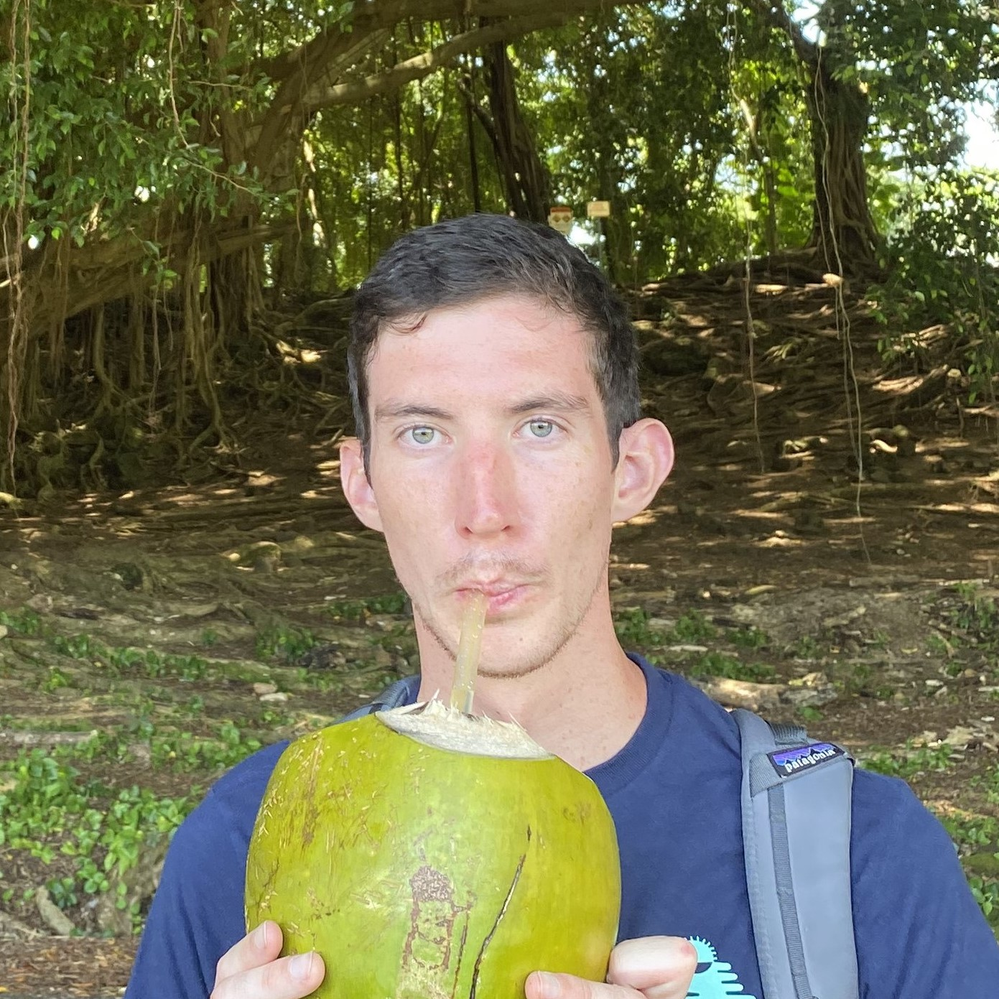

Antoine Moulin
Hi! I am a PhD student in machine learning. I have worked on infinite-horizon reinforcement learning and imitation learning, and I am now interested in understanding and improving language models, especially through post-training methods.
I am co-advised by Gergely Neu and Arthur Gretton. You can reach out to me at: firstname [dot] lastname [at] upf [dot] edu.
CV / Google Scholar / X / GitHub

★ Equal contribution.
When Does On-Policy Interaction Help? Representational Tradeoffs in Value-Based Imitation Learning
Luca Viano★, AM★, Audrey Huang, Volkan Cevher, Philip Amortila, Dylan J. Foster
preprint
Contributed talk at EWRL 2026
arxiv
tl;dr: querying the expert on the learner's trajectories enables efficient imitation under Q-expert realizability, whereas efficient offline imitation is impossible under this assumption alone.
AM, Gergely Neu, Luca Viano ()
(COLT 2025) 38th Annual Conference on Learning Theory
Contributed talk at EWRL 2025
arxiv
tl;dr: we combine reward bonuses with optimistic absorbing-state transitions to obtain the first computationally efficient algorithm with rate-optimal regret in discounted linear MDPs.
A benchmark of expert-level academic questions to assess AI capabilities (Humanity's Last Exam)
Center for AI Safety, Scale AI, HLE Contributors Consortium
Nature
arxiv
Outcome-Aware Spectral Feature Learning for Instrumental Variable Regression
Dimitri Meunier, Jakub Wornbard, Vladimir R Kostic, AM, Alek Frölich, Karim Lounici, Massimiliano Pontil, Arthur Gretton
(ICML 2026) 43rd International Conference on Machine Learning
Best poster award at the Citadel PhD summit 2026 (London)
arxiv
Inverse Q-Learning Done Right: Offline Imitation Learning in Qπ-Realizable MDPs
AM, Gergely Neu, Luca Viano ()
(NeurIPS 2025) 39th Annual Conference on Neural Information Processing Systems
arxiv
Demystifying Spectral Feature Learning for Instrumental Variable Regression
Dimitri Meunier, AM, Jakub Wornbard, Vladimir R. Kostic, Arthur Gretton
(NeurIPS 2025) 39th Annual Conference on Neural Information Processing Systems
arxiv
When Lower-Order Terms Dominate: Improved Loss-Range Adaptivity for Experts Algorithms
AM★, Emmanuel Esposito★, Dirk van der Hoeven
(NeurIPS 2025) 39th Annual Conference on Neural Information Processing Systems
arxiv
Spectral Representation for Causal Estimation with Hidden Confounders
Haotian Sun★, AM★, Tongzheng Ren, Arthur Gretton, Bo Dai
(AISTATS 2025) 28th International Conference on Artificial Intelligence and Statistics
arxiv
Optimistic Planning by Regularized Dynamic Programming
AM, Gergely Neu ()
(ICML 2023) 40th International Conference on Machine Learning
arxiv
Tutorial on Imitation Learning
Efficient Exploration in Linear Markov Decision Processes
Inverse Q-Learning for Offline Imitation Learning
Learning in Adversarial Linear MDPs
Optimistic Planning by Regularized Dynamic Programming
Infinite Horizon MDPs under Function Approximation
Primal-Dual Methods for Reinforcement Learning
Introduction to JAX
Virtual Sculpture
{kind=link}